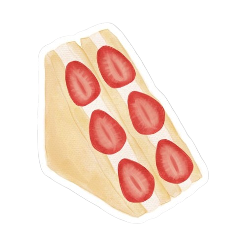

Fruit Sando

Resep Membuat Fruit Sando
Bahan
- 2 lembar roti tawar (tanpa kulit, jenis milk bread atau shokupan ideal)
- 100 ml krim kental (whipping cream)
- 1 sdm gula halus
- 1/4 sdt vanila ekstrak (opsional)
- Buah-buahan segar sesuai selera, misalnya: 2-3 stroberi 1/2 kiwi 2-3 buah anggur 1/2 jeruk mandarin (kupas)
Cara Membuat Fruit Sando
- Persiapan Buah
- Cuci bersih semua buah dan keringkan.
- Kupas kiwi dan jeruk. Potong kiwi menjadi irisan tebal.
- Potong buah agar pas di dalam sandwich.
- Membuat Krim
- Kocok krim kental dengan mixer atau whisk hingga lembut dan mengembang.
- Tambahkan gula halus dan vanila ekstrak, lalu kocok kembali hingga tercampur. Jangan terlalu kaku.
- Menyusun Sandwich
- Oleskan krim secara merata pada satu sisi roti tawar.
- Atur buah-buahan di atas krim sesuai pola atau selera.
- krim lagi di atas buah untuk merekatkannya sebelum menutupnya dengan roti kedua.
- Tekan perlahan agar sandwich menyatu.
- Menyimpan Sandwich
- Bungkus sandwich dengan plastik wrap dan simpan di kulkas selama 1 jam agar lebih set.
- Penyajian
- Potong sandwich secara diagonal atau lurus dengan pisau tajam untuk memperlihatkan pola buah di dalamnya.
- Sajikan dingin.
Tips
- Gunakan buah dengan warna berbeda agar tampilannya lebih cantik.
- Jangan terlalu banyak memasukkan buah agar mudah dipotong dan dimakan.